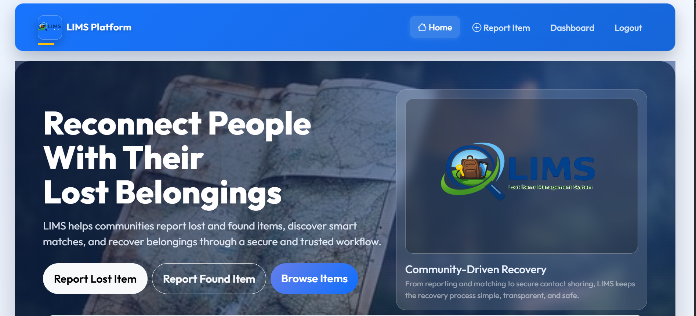

Lost Items Management System
Final-year group project built to help users report, search, and manage lost and found items.
HTML, CSS, JavaScript, MySQL, Node.js, ReactBackend Developer & Team Leader
Open to Junior Software Developer role
Computer Science graduate with software development experience.
I graduated with a BSc in Computer Science from Hawassa University. I completed an internship at the Commercial Bank of Ethiopia, where I gained exposure to IT operations and software systems while developing my teamwork skills. My project experience includes the Lost Items Management System, where I led the team.
Featured Projects
Here are the projects I am currently highlighting.

Final-year group project built to help users report, search, and manage lost and found items.
What matters
The site keeps the layout simple so recruiters can quickly see my background, skills, internship and work experiences, and project works.